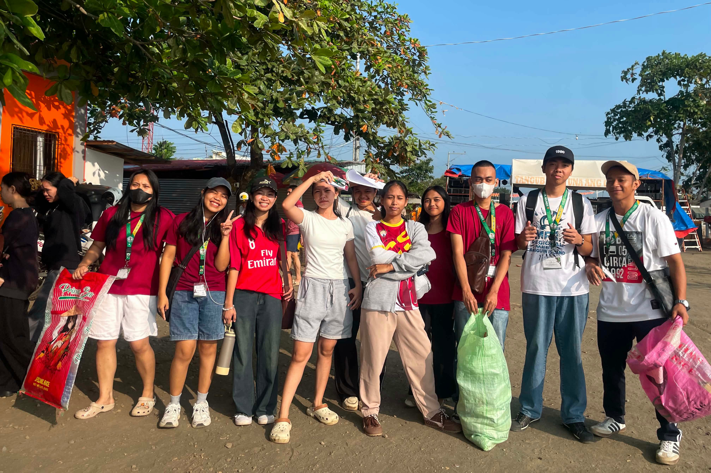
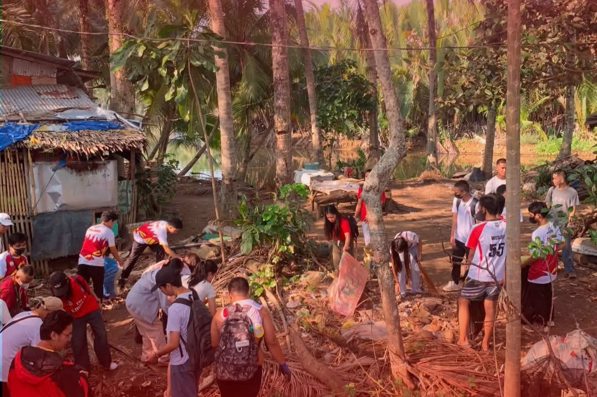

Help Those in Need
Extend a helping hand to people who need support. We can donate useful items, share food, volunteer, or simply offer our time and attention to someone who needs it.
✦ COMPASSION • SERVICE • UNITY ✦
A better community begins with people who care. Through kindness, service, and unity, we can create positive changes that inspire others.
Discover Our Advocacy ↓A brighter community begins with people who care. Through unity, kindness, and service, we can make a meaningful difference in the lives of others.

Our community is built on friendship, unity, and the willingness to help one another. This gathering reminds us that meaningful change begins when people come together with one purpose. Every smile, shared experience, and helping hand strengthens the bond that makes our community special.
We believe that everyone has something valuable to contribute. By working together and showing kindness, we can create a welcoming environment where everyone feels appreciated and included.

Caring for our surroundings is one way we can show love and responsibility toward our community. Through our clean-up activity, we worked together to collect scattered waste and help make the environment cleaner and more pleasant.
This experience taught us that keeping our surroundings clean is everyone's responsibility. Even simple actions can create positive changes when we work together with dedication and cooperation.
WAYS WE CAN HELP
Every good action, no matter how small, can bring hope and positive change.
Extend a helping hand to people who need support. We can donate useful items, share food, volunteer, or simply offer our time and attention to someone who needs it.
Protecting nature is a responsibility we all share. Simple actions such as proper waste disposal, recycling, planting trees, and joining clean-up activities help create a cleaner environment.
A kind word or encouraging message can brighten someone's day. Let us promote respect, understanding, and positivity both in our communities and online.
BE PART OF THE CHANGE
You do not need to be rich, famous, or powerful to help others. You only need the willingness to care and take action.
Volunteer in community activities.
Donate clothes, food, or useful supplies.
Practice proper waste disposal and recycling.
Support and encourage people around you.
Use social media to promote positive causes.
Every helping hand brings us closer to a better community.
✦KEEP GROWING AND SHARING
Discover the skills, experiences, and goals that make each of us unique.
Explore My Portfolio →